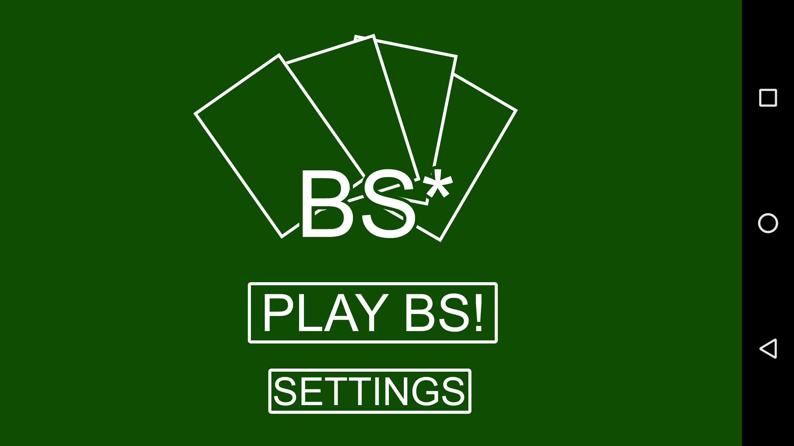
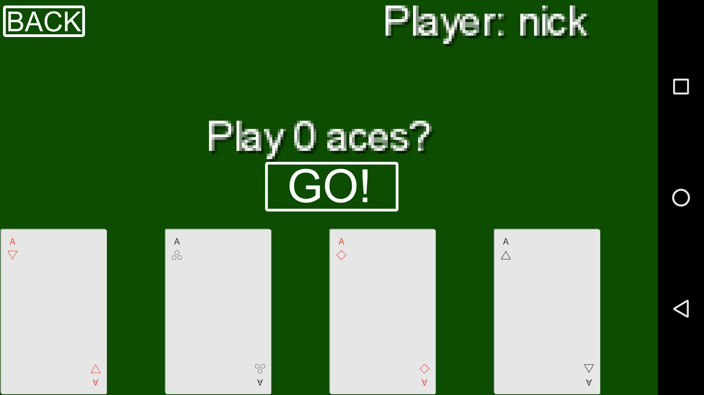

BS*
A twist on a popular card game, for Android. Original pitch here.
Be sure to read the README before running to ensure a smooth user experience. 
The Rules
Traditional
In normal BS, the object of the game is to be the first player to get rid of all the cards in his or her hand. Players are dealt cards one at a time until the whole deck has been dealt. The player with the Ace of Spades starts the game, which proceeds as follows:
- There is a target rank, which is initially an ace. The player whose turn it is plays n cards face down, declaring them to be n aces, twos, threes, etc. The player does not have to play cards of the target rank if they think they can get away with lying.
- Any player can accuse this player of lying about their play ("BS!"). If the player was lying, he/she takes back his/her cards in addition to all cards that have been played in the current "round" (i.e., since the beginning of the game or the last time "BS" was called). If the player was telling the truth, his/her accuser takes the cards.
- The target rank increments by one (if it is a king, it wraps back around to become an ace), and the turn shifts to the player immediately clockwise of the previous one.
- This repeats until a player has no cards left, at which point that player wins.
Modifications
Our game introduces the following modifications
- The target rank does not increment until a round is over.
- Only the player whose turn it is next can accuse the current player of lying.
- You may not lie on the turn where you put down your last card.
How is it different?
Our rules introduce an added layer of required skill to traditional BS. In addition to lying convincingly, another level of calculations is necessary to know when to lie, since every player has an incentive to control the target rank so they can be in position to win. In other words, lying is easier because it is often in the next player's best interest to look the other way.
Currently working on
- Working game demo
- AI testing/fine-tuning
- Penalties for losing (thanks to XD for the suggestion)
Completed
On top of the basic game framework, we plan to add the following features:
- Connectivity with other devices
- Basic UI
- A graphical interface for the cards
Authors and Contributors
@nmoolenijzer, @ziyuanliu, @rcornew, @johnmartin108
Our current work breakdown is as follows: Zi and Richard take multiplayer stuff (bluetooth/server communication); Nick and John write core game functions; everyone collaborates on UI and program flow.
Acknolwedgements to Charlie Johnson '19 for the game concept